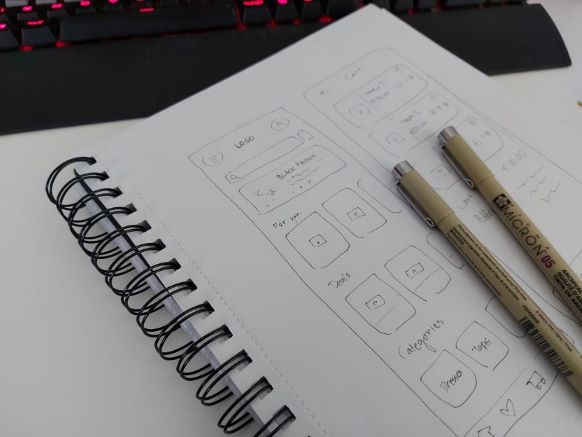

This project was my personal project that I started in order to challenge myself as a designer. I came up with the concept of Rave, a fashion store app, that targets young adults. Through this project I mainly wanted to exercise my design skills, especially wireframing and prototyping, but I also wanted to try my hand at creating a brand from scratch.
I had some key goals I wanted to focus on during this project. Here are the three things I wanted to take into account while designing Rave app:
I started the design process with some simple sketches of app layouts. Sketching in my notebook is the best way to easily brainstorm possible ideas. I don't want to get too hung up on complex details during this design stage. For me, the most important thing during this phase is that you get your mind running. At the end, I came up with some simple drawings that served as a good strating point for more detailed wireframes.
During the wireframe creation, I started to think more about the little important details and flow between the pages. My layout choices use many typical design choices. This helps the user navigate easily through the app. While the layout choices are typical, I knew that in later design stages I wanted to bring novelty and distinctiveness to the design through color and font choices.
Before wireframing, I studied similar applications and thought a lot about what features would enhance the users' experience. I decided that in addition to typical shopping features (e.g. wishlist), it was important to focus on different personalized features. This is why I included a 'For you' section on the main page and 'You may also like' section on the wishlist page. The personalized recommendation features based on data ensure that the users can easily find items that they love and make the experience more catered to their taste.
I started to form the final designs based on the wireframes. My design choices took inspiration from different retro band posters. The color scheme that I chose for the app is quite strong, consisting of shades of green and red, a complementary color pair. Using complementary colors works in the context of this app, since I believe it fits with the aesthetic of the target audience, giving the app a more rebellious energy. I took accessibility into account by making sure that the color choices aligned with the WCAG 2.1 color contrast guidelines. I also considered accessibility while choosing the font families, making sure that the fonts were easy to read. I did some simple prototyping to demostrate what it looks like to move through the app.
My goal was to create a design for a clothing store app. I wanted to practice wireframing, prototyping and brand creation during the process. I'm happy with the results I achieved. I had three main goals that I wanted to focus on: finding a good balance between novelty and typicality, taking accessibility into account, and designing for the target group. The design received good feedback from different people who viewed it. This project was a personal project where I came up with the idea and was responsible for all the choices made. In the future, I look forward to working on design projects where I get to help real clients achieve their visions.